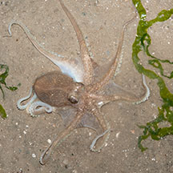
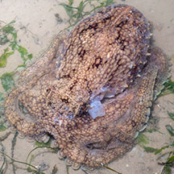
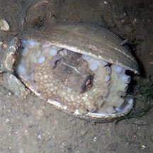
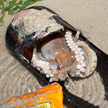
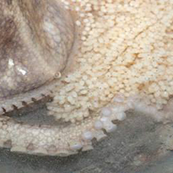
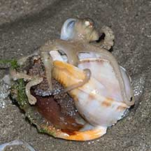

|
|
| cephalopods text index | photo index |
| Phylum Mollusca > Class Cephalopoda > Family Octopodidae |
| Big-head
seagrass octopus awaiting identification* Family Octopodidae updated May 2020 Where
seen? This octopus with a large smooth head is sometimes
commonly seen on Changi, among seagrasses. |
 Smooth head large relative to its arms. Changi, Jul 08 |
 Sometimes with small bumps on the head. Changi, Aug 14 |
 'Walking' with its head above the ground. Changi, May 09 |
| Features: It is often seen hiding in crevices, holes and cavities. Also inside shells of large snails like the Noble volute and Baler volute. Small ones even hide in empty shells of dead clams. Also in litter like glass bottles and clay jars (used for burial rituals). |
 Hiding in a dead Noble volute shell. Changi, Jun 13 |
 Hiding in a dead clam shell Changi, Jul 18 |
 Hiding in a broken glass bottle Changi, Jun 13 |
 Changi, Jul 09 |
 Carrying eggs? |
 |
| Good parent: Sometimes the octopus can be seen with strings of what seems to be developing eggs. While hiding inside a shelter or even dragging the strings along behind it. Human uses: Fishermen have been observed gathering it on Changi to be used as bait. |
 |
*Species are difficult to positively identify without close examination.
On this website, they are grouped by external features for convenience of display.
| Big-head seagrass octopuses on Singapore shores |
On wildsingapore
flickr
|
| Other sightings on Singapore shores |
 With eggs inside an empty shell. |
 With eggs inside an empty shell. Changi Lost Coast, Jun 22 Photo shares by Dayna Cheah on facebook. |